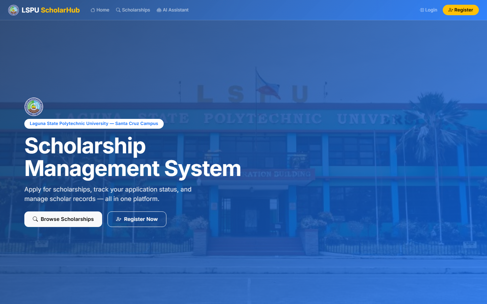
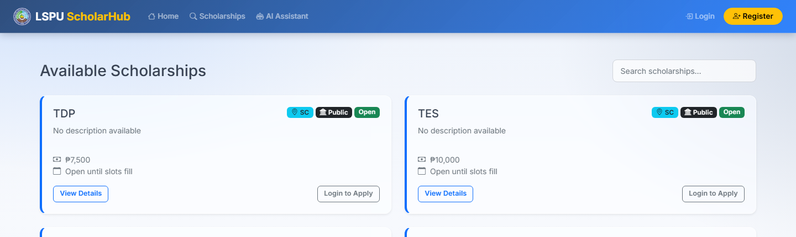
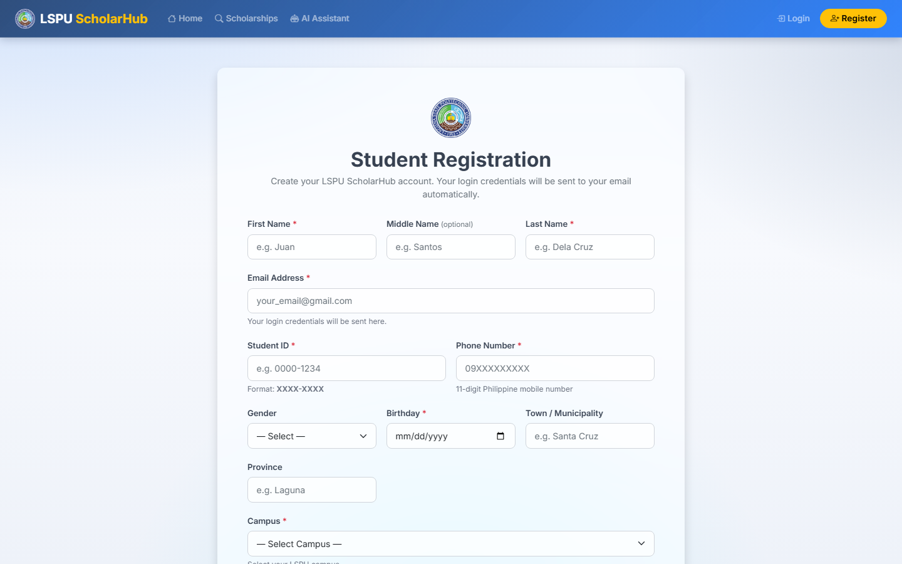
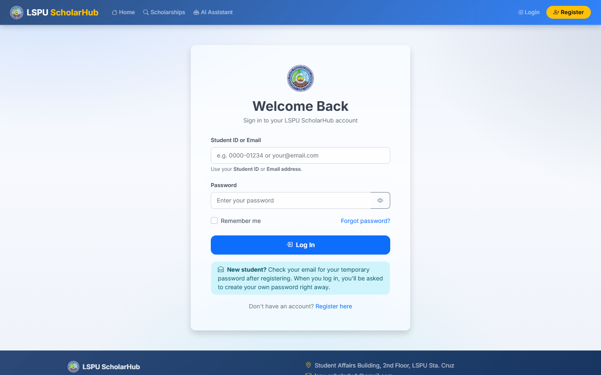
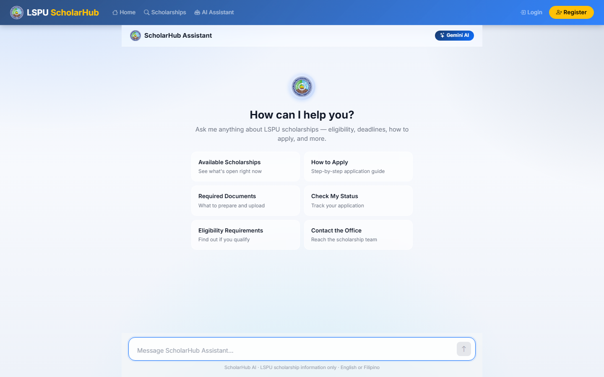
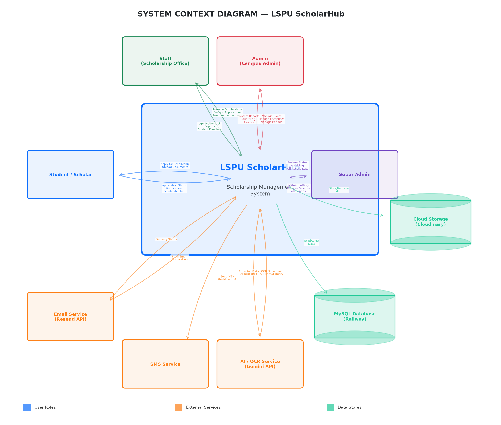
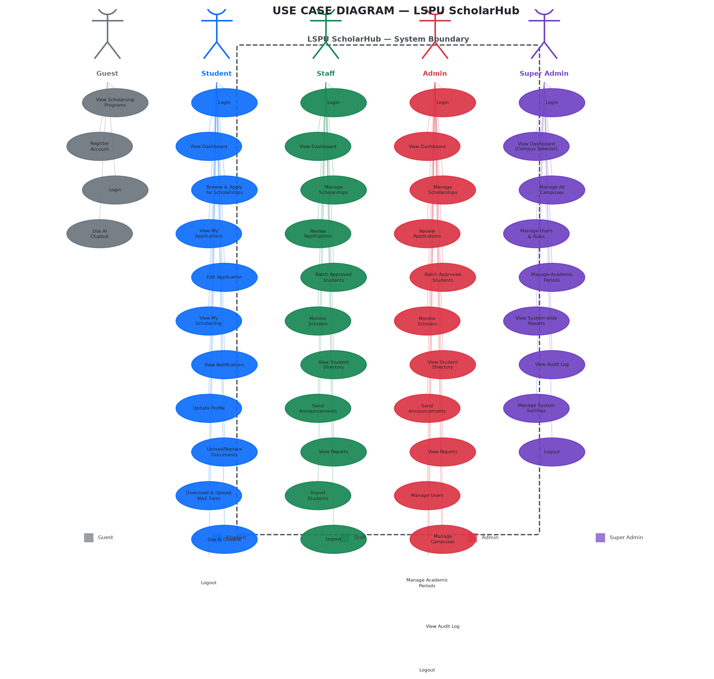
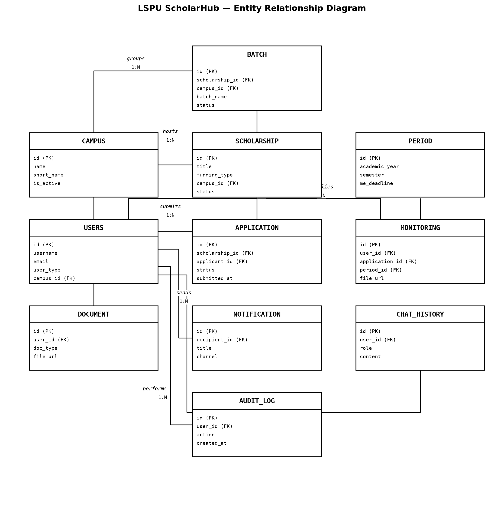

Scholarship processing that depended on paper, spreadsheets, and legwork
Before ScholarHub, the Scholarship Office handled every stage of a scholarship manually. The system was built to replace that workflow end to end.
- Student registration and eligibility were verified by hand — Certificates of Registration and copies of grades were checked manually, with no cross-validation against the encoded details.
- Program applications were collected through paper forms and Google Forms, then re-encoded, so student data was duplicated in several places.
- Approved scholars were batched and tracked per student in spreadsheets, making disbursement records slow to prepare and easy to desynchronize.
- Monitoring & Evaluation forms were filed on paper, so compliance per scholar and per semester was not centrally visible.
- Announcements and reminders were sent one by one, and records were fragmented across the Santa Cruz, Siniloan, Los Baños, and San Pablo City campuses.
What the study set out to achieve
General objective
To design, develop, test, and evaluate LSPU ScholarHub as an AI-enabled web-based scholarship management and monitoring system for the Scholarship and Financial Assistance Office (SFAO) of Laguna State Polytechnic University–Santa Cruz Campus, supporting its operational requirements and those of student scholars through integrated document processing, academic monitoring, communication, information management, and administrative functions.
Specific objectives
- Design and develop LSPU ScholarHub based on the identified functional and operational requirements of the SFAO and student scholars.
- Evaluate the functional performance of the major modules — user account management, AI-powered document verification, academic monitoring, AI-enabled chatbot, multi-channel notifications, document repository, administrative dashboard, and super user management — in terms of accuracy, response time, reliability, and delivery rate.
- Determine the perceived software quality and user acceptance of LSPU ScholarHub based on the applicable ISO/IEC 25010 characteristics: Functional Suitability, Performance Efficiency, Usability, Reliability, Security, and Maintainability.
How the system was designed and built
Development followed the system development life cycle: requirements gathering, analysis and design, development, testing, and deployment.
Requirements
Processes of the LSPU Scholarship Office were documented and analyzed together with the official 2026 UniFAST TES and TDP guidelines, which the system's assistant also uses as its source of truth.
Analysis & design
A three-tier Model–View–Controller architecture was designed, supported by a context diagram, use-case diagram, entity-relationship diagram of the twelve core entities, and ten process-flow diagrams.
Development
Built with Flask 2.3.3 and Jinja2 templates on a MySQL database, with a service layer for OCR verification, chatbot, batching, exports, notifications, and campus scoping.
Testing & evaluation
Functional performance was measured per module in terms of accuracy, response time, reliability, and delivery rate, then perceived software quality and user acceptance were evaluated by the intended users using ISO/IEC 25010 characteristics after demonstration and hands-on use.
Deployment
The system runs on Railway with Gunicorn, stores uploaded documents on Cloudinary, and sends email and SMS through Brevo and Semaphore/Twilio.
AI integration
Google Gemini powers two features: OCR document intelligence for PDF verification, and the ScholarHub Assistant, which answers scholarship questions using live, visibility-scoped data.
End-to-end scholarship lifecycle
Role-based features for the whole Scholarship Office
Student
- Dashboard with application counters, GWA card, and document reminders
- Campus-scoped scholarship list and pre-filled application form
- Application status tracking, edit, and withdraw while pending
- My Scholarship: batch details and M&E form download/upload
- Document replacement with OCR re-verification
- In-app, email, and SMS notifications
- ScholarHub AI Assistant
Staff
- Review queue with approve, reject, and under-review actions
- Scholarship program creation and management with custom fields
- One-click batching by program with Excel export
- Monitoring and tracking with M&E compliance column
- Reports with Chart.js visualizations
Administrator
- All staff capabilities, scoped to the assigned campus
- User management, role changes, and campus assignment
- Campus settings such as the M&E deadline
- Audit log and campus-wide reports
Super Administrator
- University-wide view with campus context switcher
- Campus management and academic period configuration
- University-wide scholarship programs
- Full audit log and analytics across all campuses
Guest
- Landing page and public scholarship browsing
- AI Assistant for public, non-hidden programs
- Registration and login
Cross-cutting
- Multi-channel notifications: in-app, email, SMS
- Document-verified registration and renewal
- Audit trail for administrative actions
- Campus-level data isolation enforced in queries
The system in action
Click any screenshot to open it at full size.





Architecture and design diagrams



| Layer | Technology |
|---|---|
| Frontend | HTML5, CSS3, Bootstrap 5.1.3, JavaScript ES6, Chart.js |
| Backend | Python, Flask 2.3.3, Jinja2, Gunicorn, MVC with blueprints and a service layer |
| Database | MySQL with SQLAlchemy ORM; twelve core entities |
| AI | Google Gemini for OCR document verification and the conversational assistant |
| Storage & messaging | Cloudinary for documents; Brevo email; Semaphore/Twilio SMS |
| Deployment | Railway with Gunicorn workers |
Researchers and adviser
Source code, documentation, and setup guide
- 📦 GitHub repositoryComplete source code of the system
- 📄 README & project overviewFeatures, structure, and API endpoints
- ⚙️ Setup guideRequirements, installation, and configuration
- 📘 Latest manuscript (PDF)Complete capstone manuscript, 333 pages
- 📚 Manuscript & system documentationThesis manuscript plus ERD, data dictionary, and process flows
- 🗃️ Additional documentationTesting policy, verification scripts, and flowcharts
- 💬 Issues & feedbackReport a problem or suggest an improvement